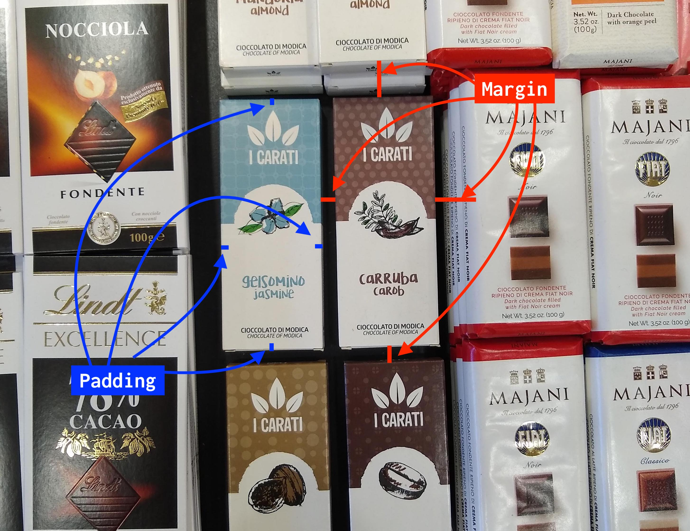

CSS
L'HTML è fin da subito nato come uno standard aperto: questo all'inizio ha creato delle difficoltà, ma con il passare del tempo si è rivelato un aspetto vincente.
La definizione del CSS è un tipico esempio di quanto detto. Nei primi anni di diffusione (1993-1996) le diverse aziende concorrenti che hanno creato i primi browser (Netscape e Internet Explorer in particolare) crearono delle estensioni proprietarie dell'HTML con l'aggiunta di confusione e difficoltà per gli sviluppatori. Il w3c decise quindi di affrontare questo problema creando un gruppo di lavoro che produsse uno standard nel 1996 chiamato Cascading Style Sheet (CSS).
Questa divisione si rivelò estremamente efficace per risolvere i problemi che si sono posti con il passare degli anni. In particolare, riuscì in modo eccellente a risolvere il problema della diversa dimensione degli schermi dei palmari prima e degli smartphone poi.
Oggi CSS include moltissime funzionalità che permettono l'animazione degli elementi nelle pagine, le trasformazioni (es. rotazione, scalatura), i gradienti e molte altre cose.
Concetti base
Selettori
Il CSS si basa su questi due passaggi:
- selezionare gli elementi a cui si vuole applicare un certo stile
- dichiarare le proprietà da applicare a quegli elementi.

I selettori di base sono di 3 tipi:
- tag: non hanno nessun prefisso, selezionano tutti gli elementi con il tag selezionato. Ad esempio
div {background-color:red}colora di rosso lo sfondo di tutti gli elementi con il tag div - id: ha come prefisso
#(cancelletto), seleziona l'elemento che ha come attributo id il valore specificato. Ad esempio#my-title {font-weight:bold}rende grassetto l'elemento che ha come attributoid="my-title" - class: ha come prefisso
.(punto), seleziona tutti gli elementi che hanno come attributo il valore specificato. Ad esempio.small-images {width=5%}imposta la larghezza di tutti gli elementi che hanno come attributoclass="small-imagesal 5% della larghezza dello schermo.
Box model
Un altro concetto fondamentale del CSS è che la pagina è come se fosse uno scaffale, in cui ogni elemento è una scatola (box). La scatola è composta dalla confezione (border), al cui interno c'è un contenuto (content) protetto dall'imballaggio (padding). Le scatole sono distanziate l'una dall'altra da un margine di spazio (margin).

Ricapitolando, la nomenclatura del box-model utilizzato da CSS è:
- box: ogni elemento della nostra pagina
- content: il contenuto vero e proprio, ad esempio il testo, l'immagine o altri elementi annidati
- padding: l'imballaggio, sta all'interno della nostra scatola, quindi coprirà anche l'eventuale colore o immagine di sfondo
- border: la confezione, ovvero il rettangolo che include padding e contenuto
- margin: il margine tra una scatola e l'altra
Fate attenzione che i margini tra due elementi si sommano: quindi se un elemento ha margine destro pari a 10px, e il successivo ha margine sinistro pari a 15px, il margine totale sarà 25px.